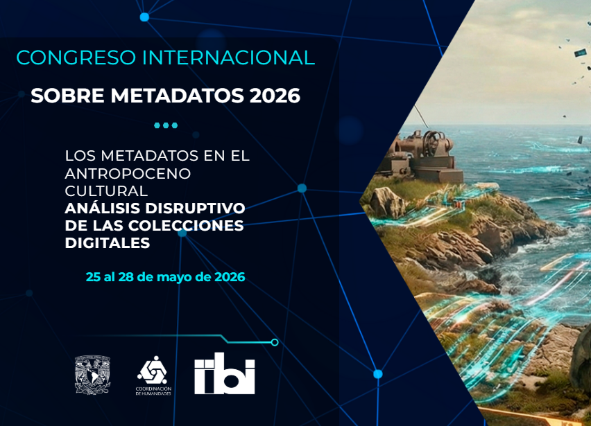

Professional Activity
A chronological record of presentations, publications, posters, moderation, reports, and other professional contributions since 2020. Browse the complete archive or filter by type of activity.
2026

Spain Reads at UM
University of Miami Libraries · Miami · 21–25 de septiembre de 2026

Taller práctico de Linked Data y BIBFRAME en la Universidad Autónoma de San Luis Potosí
Universidad Autónoma de San Luis Potosí · San Luis Potosí, México · August 31–September 4, 2026

La techne de la memoria: libros de artista como pensamiento material
Twenty-Fourth International Conference on New Directions in the Humanities · Lisbon, Portugal · July 3, 2026

Expanding Professional Practice at FIL Guadalajara through the ALA–FIL Free Pass Program
International Leads, vol. 40, no. 2 · June 2026

The University of Miami Rome Library: A Transatlantic Model for Collaborative Collection Development and Access
ALA Annual Conference · Chicago · June 28, 2026

Congreso Internacional sobre Metadatos 2026: Los metadatos en el Antropoceno cultural
Ciudad de México · May 25–28, 2026

AI in Action: Practical Experiments in Cataloging at the University of Miami Libraries
SEC Libraries AI Summit · May 6, 2026

Feria Internacional del Libro (FIL) de Guadalajara, 2025
Feria Internacional del Libro de Guadalajara · Guadalajara, México · December 2025
2025

Empowering Cataloging Through AI: Practical Solutions and Explorations from the University of Miami Libraries
SEFLIN Annual Conference · Miami · October 23, 2025

Developing an AI Assessment Approach Using the Primo Research Assistant
ELUNA Annual Conference · Atlanta · June 19, 2025
Vocab Advocacy: Using Normalization Rules to Supplement LC Subject Headings with Homosaurus Terms
ELUNA Annual Conference · Atlanta · June 20, 2025
Embracing Innovation at UML: Leveraging Ex Libris New Features to Enhance Library Services
ELUNA Annual Conference · Atlanta · June 20, 2025
2024
IRRT Poster Committee: Celebrating IRRT’s 75th Anniversary
ALA Annual Conference · San Diego · July 1, 2024
Hacia un catálogo más inclusivo: el caso de “Illegal Aliens” en la Universidad de Miami
UNAM · Mexico · 2024
Journey to Primo VE: From Past to Future at University of Miami
ELUNA Annual Conference · Minneapolis · May 17, 2024
Navigating Librarianship: Personal Journeys of Success and Challenges
University of Miami Libraries · April 25, 2024
Transitioning to Linked Data Formats to Prepare for an Artificial Intelligence Future
4th Artificial Intelligence and Libraries Symposium · Santiago de Chile · April 12, 2024
El impacto de la inteligencia artificial generativa en las bibliotecas académicas
Clarivate · Santiago de Chile · March 19, 2024
Decolonizing Print Culture and Bibliography through Digital Visualizations of Artists’ Books at the University of Miami
CLI 2024 · Rome · Accepted; not presented
2023
Curating Artists’ Books and Improving Their Access at University of Miami
SEFLIN Regional Conference · August 23, 2023
Gestión de Colecciones Especiales a través de Alma
Jornadas de Expania · June 2, 2023
Reading Room Management Through Alma: Accomplishments and Challenges
ELUNA Annual Conference · Los Angeles · May 10, 2023
2022
Streamlining Distinctive Collections Operations through Integrated Technologies
ELSUG Conference · November 8–9, 2022
Distinctive Collections Inventory and Reading Room Management through the ILS
CORE Forum · Salt Lake City · October 13–15, 2022
Aeon2Alma: Distinctive Collections Reading Room Management Through Alma
IGELU · September 14, 2022
Classification and Reparative Work: Eradicating Racist Cutters
SEFLIN Regional Conference · July 28, 2022
Increasing Access and Diversifying Workflows: Cataloging Trends at the University of Miami Libraries
Florida Library Association Annual Conference · May 23, 2022
2021
Análisis de la calidad del catálogo bibliotecario: el caso de la Cuban Heritage Collection en la Universidad de Miami
EDICIC 2021 · October 26–29, 2021
Hacia un catálogo más inclusivo: el caso de “Illegal Aliens” en la Universidad de Miami
XI Encuentro de Catalogación y Metadatos · August 12, 2021
2020
Inclusive Metadata & Conscious Editing Resources List
Resource list · 2020
Implementación de Esploro en la Universidad de Miami: migración e incorporación de datos
Jornadas de Expania · November 26, 2020
Core Continuing Education Working Group Report
CORE Continuing Education Working Group · August 2020
Designing the Perfect Ingestion: The Kislak Collection at University of Miami
SEFLIN Annual Regional Conference · July 30, 2020
Alma and the World: Cleaning Up, Meeting the Future’s Demands
ELUNA Annual Conference · May 6, 2020 · Cancelled due to COVID-19